Recurrent Neural Networks#
Michael J. Pyrcz, Professor, The University of Texas at Austin
Twitter | GitHub | Website | GoogleScholar | Geostatistics Book | YouTube | Applied Geostats in Python e-book | Applied Machine Learning in Python e-book | LinkedIn
Chapter of e-book “Applied Machine Learning in Python: a Hands-on Guide with Code”.
Cite this e-Book as:
Pyrcz, M.J., 2024, Applied Machine Learning in Python: A Hands-on Guide with Code [e-book]. Zenodo. doi:10.5281/zenodo.15169138 
The workflows in this book and more are available here:
Cite the MachineLearningDemos GitHub Repository as:
Pyrcz, M.J., 2024, MachineLearningDemos: Python Machine Learning Demonstration Workflows Repository (0.0.3) [Software]. Zenodo. DOI: 10.5281/zenodo.13835312. GitHub repository: GeostatsGuy/MachineLearningDemos 
By Michael J. Pyrcz
© Copyright 2024.
This chapter is a tutorial for / demonstration of Recurrent Neural Networks.
YouTube Lecture: check out my lectures on:
These lectures are all part of my Machine Learning Course on YouTube with linked well-documented Python workflows and interactive dashboards. My goal is to share accessible, actionable, and repeatable educational content. If you want to know about my motivation, check out Michael’s Story.
Motivation#
Recurrent neural networks are very powerful, nature inspired computing based on an analogy of brain
I suggest that they are like a reptilian brain, without planning and higher order reasoning
In addition, artificial neural networks are a building block of many other deep learning methods, for example,
convolutional neural networks
recurrent neural networks
generative adversarial networks
autoencoders
Nature inspired computing is looking to nature for inspiration to develop novel problem-solving methods,
artificial neural networks are inspired by biological neural networks
nodes - in our model are artificial neurons, simple processors
connections between nodes are artificial synapses
intelligence emerges from many connected simple processors. For the remainder of this chapter, I will used the terms nodes and connections to describe our artificial neural network.
Artificial Neural Networks#
If you have not, take this opportunity to review my previous chapters in the e-book on, Artificial Neural Networks.
The main takeaways from my artificial neural network chapter are as follows,
architecture of a neural network, including its fundamental components, nodes (neurons) and the weighted connections between them.
forward pass computation through the network, where each node computes a weighted sum of its inputs (including a bias term), followed by the application of a nonlinear activation function.
computation of the error derivative, which is then backpropagated through the network via the chain rule to determine the gradients of the loss function with respect to each weight and bias.
aggregation of these gradients across all samples in a training batch, typically by averaging, to update the model parameters.
iterative training process, where the model is trained over multiple batches and epochs (passes over all the data) to continually refine the weights and biases until the model achieves an acceptable error rate on the test data.
The main takeaways from my convolutional neural network chapter are as follows,
regularization of image data with receptive fields to preserve spatial information and to avoid overfit.
convolutional kernels with learnable weights to extraction information from images.
For both of these chapters, I have included links to my recorded lectures and to neural networks built from scratch with NumPy only!
Definition of Recursion#
Recursive neural networks are built upon the concept of recusion. Let’s start by defining recursion,
From Oxford English Dictionary,
Recursion - “the repeated application of a recursive procedure or definition”
Recursion is a recursive procedure, is a recursive procedure, is a recursive procedure, …
From Wikipedia,
Recursion - “recursion occurs when the definition of a concept or process depends on a simpler or previous version of itself”
Philosophically speaking we can describe recursion as,
a complicated system built by repeated application of a simple step.
Let’s take a simple mathematical operator that is solved with recursion, the factorial.
Here’s a function that could be written in Python to solve any factorial of an integer,
def factorial(n):
if n == 0 or n == 1:
return 1:
else:
return n * factorial(n-1)
Did you see it? The function calls itself, this is recursion in programming.
Feed-forward and Feedback Networks#
A critical aspect of the Artificial Neural Networks is that the network is fully connected, feed-forward.
with a recurrent neural network, information can flow backwards.
Heres an illustration of both,
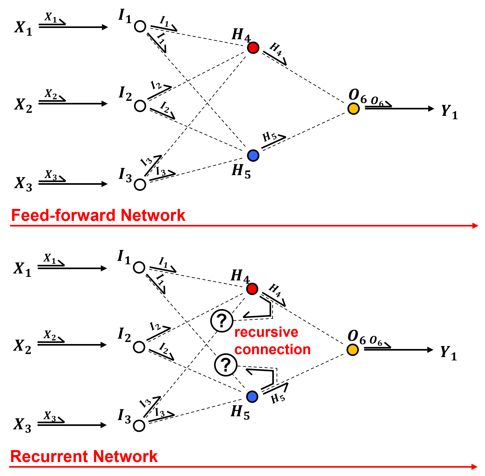
Feed-forward – information from predictor feature to response is combined and compressed to map to predict the response feature.
Feedback – connections that take information to earlier layers or into the same layer in a later step
Series Data#
A sequence of observations collected over ordered intervals, typically through time but sometimes through space or another ordered dimension. Example include,
Time series data - by-second stock prices in financial markets, monthly rainfall measured at a weather station in meterology
Spatial series data - mineral grades along a borehole in depth or a oil production from a well over time in geoscience
Sequential process data - rate of failure of product from an assembly line
Here’s a simple bivariate, sparial series dataset with porosity and permeability measured at regular intervals of a well based on extracted core data.
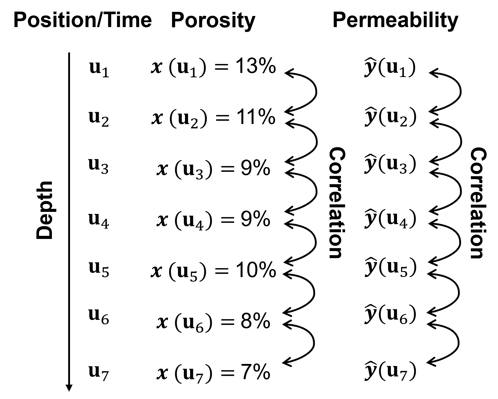
We could build a prediction model that predicts permeability from porosity at each depth separately.
this may ignore important information / data structures between the locations in the series.
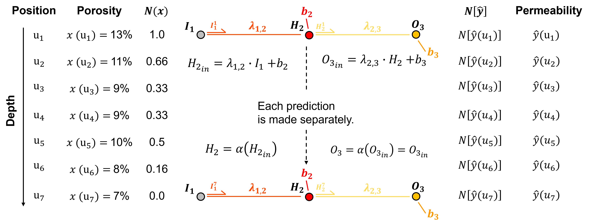
Recurrent Connections#
The previous ANN ignores information from the adjacent prediction case. The recursive neural network (RNN), make the predictions in order and share information, add memory to our network!
Make the predictions in order and share information, add memory to our network!
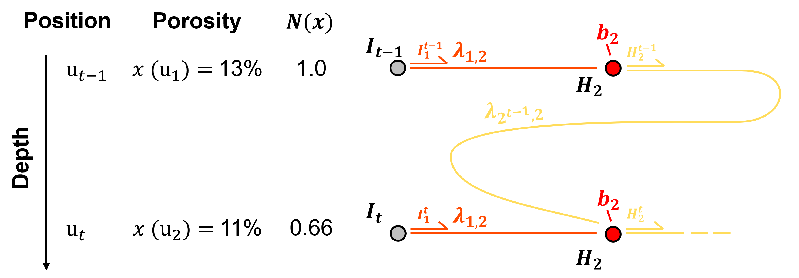
Here’s the new equation for the pre-activation result in the hidden layer node,
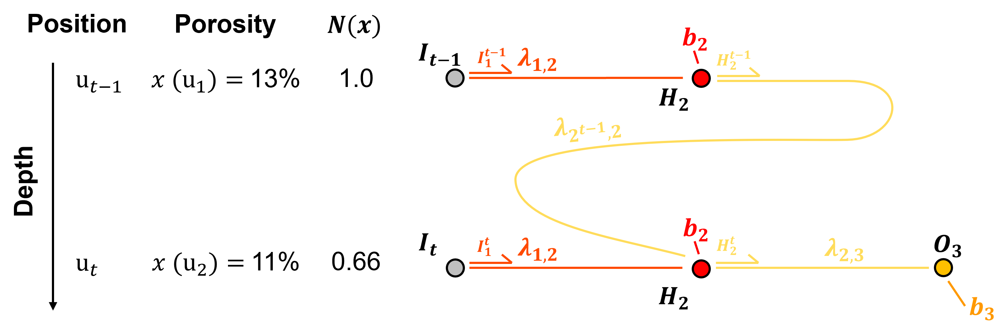
Forward Pass Through a Recurrent Neural Network#
Now here is a complete forward pass through our recurrent neural network.
start with the first prediction in the sequence, and calculate the hidden layer output only.
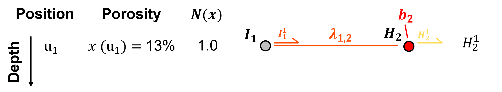
we don’t have a previous prediction with a hidden layer output, so the common approach is to assume the signal, \(H_2^{t-1}\), as \(H_2^{0}=0.0\)
now let’s proceed to the second prediction in the data series, we can pass the output signal from the first prediction hidden layer, \(H_2^{t-1} = H_2^{1}\) to our current \(t=2\) hidden layer.
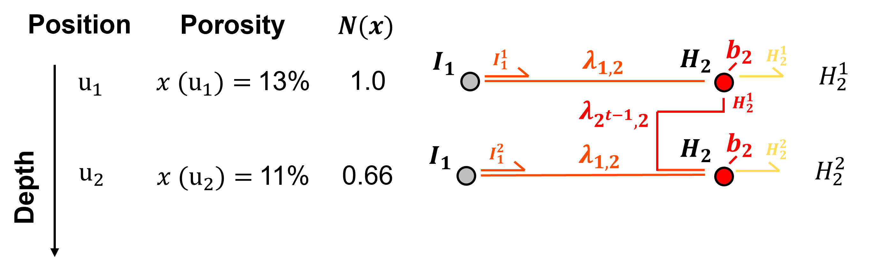
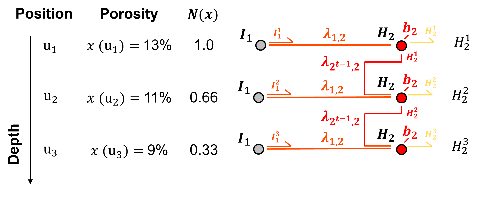
now let’s proceed to the third prediction in the data series, we pass the output signal from the first prediction hidden layer, \(H_2^{1}\) to our previous \(H_2^{2}\) hidden layer, combine these signals and pass this hidden layer output to the current hidden layer and combine with the current data to calculate the output of the current hidden layer node, \(H_2^{3}\)
No let’s combine these euqations together to show the combination of the previous data in the sequence to the current prediction. Substituting the equation for \(H_2^2\),
and substituting the equation for \(H_2^1\),
We continue until we have calculated the output for all our hidden layers for each of our predictions in the series.
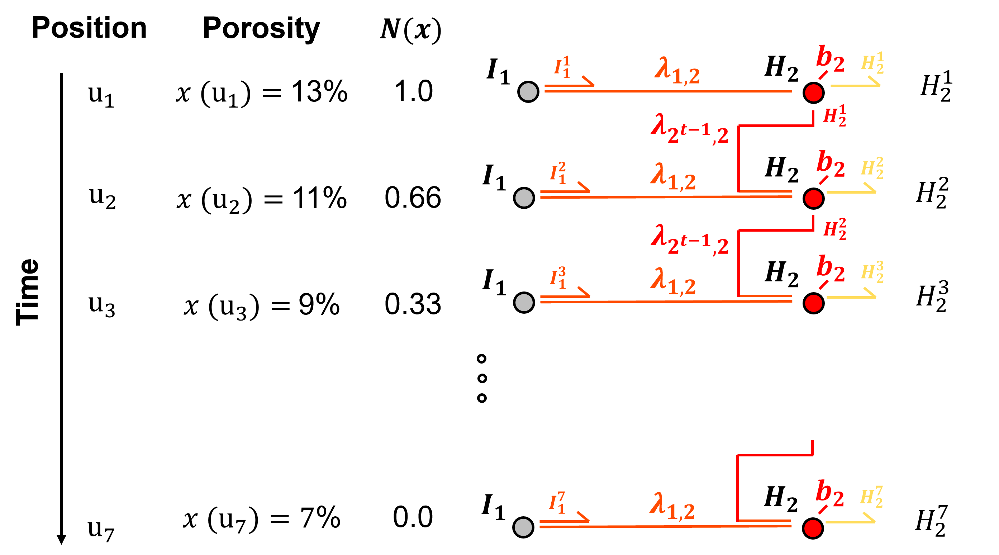
we have finished integrating the recursive aspect of our neural network.
Now we can proceed along the hidden layer to output layer connections to the output node and then pass through the output node to calculate the prediction at each step in our series data.
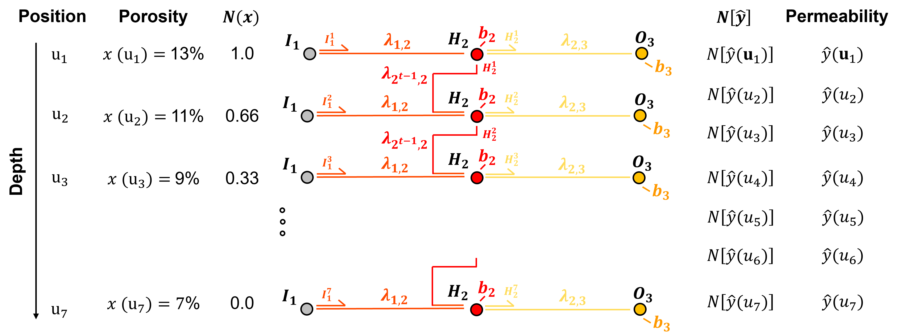
The pre-activation in the output node is,
and since for regression we commonly use identity activation,
Training Neural Networks Steps#
Training an artificial neural network proceeds iteratively by these steps,
initialized the model parameters
forward pass to make a prediction
calculate the error derivative based on the prediction and truth over training data
backpropagate the error derivative back through the artificial neural network to calculate the derivatives of the error over all the model weights and biases parameters
update the model parameters based on the derivatives and learning rates
repeat until convergence.

Here’s some details on each step,
Initializing the Model Parameters - initialize all model parameters with typically small (near zero) random values.
Forward Pass - see the workflow in the previous section for the forward pass through our recurrent neural network.
Calculate the Error Derivative - given a loss of,
and the error derivative, i.e., rate of change of in error given a change in model estimate is,
For now, let’s only consider a single estimate, and we will address more than 1 training data later.
Backpropagate the Error Derivative - we shift back through the artificial neural network to calculate the derivatives of the error over all the model weights and biases parameters, with the chain rule, for example the loss derivative backpropagated to the output of node \(H_4\),
Update the Model Parameters - based on the derivatives, \(\frac{\partial L}{\partial \lambda_{i,j}}\) and learning rates, \(\eta\), like this,
Repeat Until Convergence - return to step 1, until the error, \(L\), is reduced to an acceptable level, i.e., model convergence is the condition to stop the iterations
These are the steps, now let’s dive into the details for each.
Neural Networks Backpropagation Building Blocks#
Let’s cover the numerical building blocks for backpropagation. Once you understand these backpropagation building blocks, you will be able to backpropagate our simple network and even any complicated artificial neural networks by hand,
calculating the loss derivative
backpropagation through nodes
backpropagation along connections
accounting for recurrent paths
calculation of the loss derivatives with respect to weights and biases
For now I demonstrate backpropagation of this loss derivative for a single training data sample, \(y\).
I address multiple samples later, \(y_i, i=1, \ldots, n\)
Let’s start with calculating the loss derivative.
Calculating the Loss Derivative#
Backpropagation is based on the concept of allocating or propagating the loss derivative backwards through the neural network,
we calculate the loss derivative and then distribute it sequentially, in reverse direction, from network output back towards the network input
it is important to know that we are working with derivatives, and that backpropagation is NOT distributing error, although as you will see it may look that way!
We start by defining the loss, given the truth, \(𝑦\), and our prediction, \(\hat{y} = O_3\), we calculate our \(L^2\) loss as,
our choice of loss function allows us to use the prediction error as the loss derivative! We calculate the loss derivative as the partial derivative of the loss with respect to the estimate, \(\frac{\partial 𝐿}{\partial \hat{y}}\),
You see what I mean, we are backpropagating the loss derivative, but due to our formulation of the \(L^2\) loss, we only have to calculate the error at our output node output, but once again - it is the loss derivative.
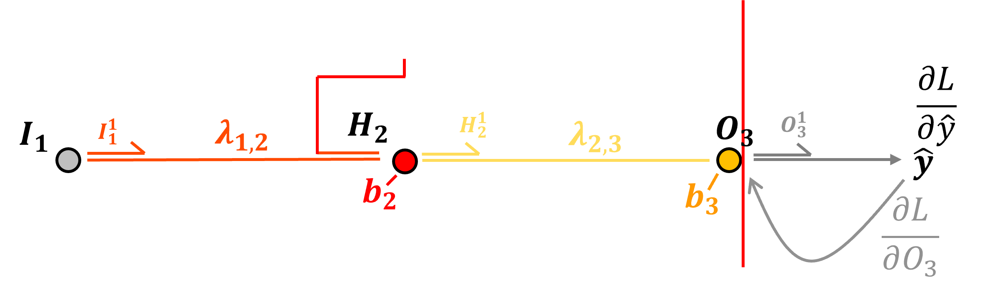
For the example of our simple artificial neural network with the output at node, \(O_3\), our loss derivative is,
So this is our loss derivative backpropagated to the output our output node, and we are now we are ready to backpropagate this loss derivative through our artificial neural network, let’s talk about how we step through nodes and along connections.
Backpropagation through Output Node with Identity Activation#
Let’s backpropagate through our output node, \(O^t_3\), from post-activation to pre-activation. To do this we need the partial derivative our activation function.
since this is an output node with a regression artificial neural network I have selected the identity or linear activation function.
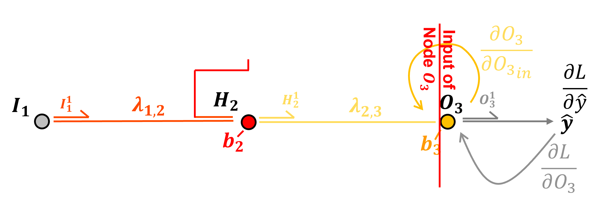
The identity activation at output node \(O_6\) is defined as:
The derivative of the identity activation at node \(O_3\) with respect to its input \(O_{3_{in}}\), i.e., crossing node \(O_3\) is,
Note, we just need \(O_3\) the output signal from the node. Now we can add this to our chain rule to backpropagate from loss derivative with respect to the node output, \(\frac{\partial \mathcal{L}}{\partial O_3}\), and to the loss derivative with respect to the node input, \(\frac{\partial \mathcal{L}}{\partial O_{3_{\text{in}}}}\),
Now that we have backpropagated through an output node, let’s backpropagation along the \(H_2\) to \(O_3\) connection from the hidden layer.
Backpropagation along Connections#
Now let’s backpropagate along the connection between output node \(O_3\) and and the hidden layer node \(H_2\).
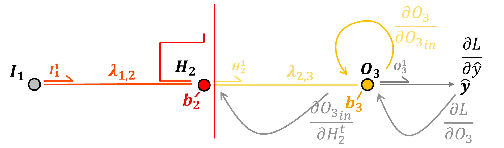
Preactivation, the input to node \(O_3\) is calculated as,
We calculate the derivative along the connection as,
by resolving the above partial derivative, we see that backpropagation along a connection by applying the connection weight.
Note, we just need the current connection weight \(\lambda_{2,3}\). Now we can add this to our chain rule to backpropagate along the \(H_2\) to \(O_3\) connection from loss derivative with respect to the output layer node input \(\frac{\partial \mathcal{L}}{\partial O_{3_{\text{in}}}}\), to the loss derivative with respect to the hidden layer node output \(\frac{\partial \mathcal{L}}{\partial H_2}\).
Up to now we have used the standard methods from our regular artificial neural network.
TBA
Import Required Packages#
We will also need some standard packages. These should have been installed with Anaconda 3.
suppress_warnings = True # toggle to supress warnings
import os # to set current working directory
import math # square root operator
import numpy as np # arrays and matrix math
import matplotlib.pyplot as plt # for plotting
import matplotlib.patches as patches # draw neural network nodes
from matplotlib.ticker import (MultipleLocator, AutoMinorLocator, AutoLocator) # control of axes ticks
plt.rc('axes', axisbelow=True) # grid behind plotting elements
if suppress_warnings == True:
import warnings # supress any warnings for this demonstration
warnings.filterwarnings('ignore')
seed = 13 # random number seed for workflow repeatability
If you get a package import error, you may have to first install some of these packages. This can usually be accomplished by opening up a command window on Windows and then typing ‘python -m pip install [package-name]’. More assistance is available with the respective package docs.
Declare Functions#
Here’s the functions to make, train and visualize our recurrent neural network.
def add_grid():
plt.gca().grid(True, which='major',linewidth = 1.0); plt.gca().grid(True, which='minor',linewidth = 0.2) # add y grids
plt.gca().tick_params(which='major',length=7); plt.gca().tick_params(which='minor', length=4)
plt.gca().xaxis.set_minor_locator(AutoMinorLocator()); plt.gca().yaxis.set_minor_locator(AutoMinorLocator()) # turn on minor ticks
def initialize_rnn_weights(seed=None, scale=0.5):
"""
Initialize weights and biases for a single-node RNN.
Returns a dictionary of parameters.
"""
rng = np.random.default_rng(seed)
params = {
"w12": rng.uniform(-scale, scale), # input → hidden
"w2t2": rng.uniform(-scale, scale), # hidden (t-1) → hidden (t)
"w23": rng.uniform(-scale, scale), # hidden → output
"b2": rng.uniform(-scale, scale), # hidden bias
"b3": rng.uniform(-scale, scale), # output bias
}
return params
def sigmoid(z):
return 1.0 / (1.0 + np.exp(-z))
def sigmoid_deriv(h):
return h * (1 - h)
def forward_pass(x, params):
w12, w2t2, w23, b2, b3 = params.values()
T = len(x)
h2, a2, y_pred = np.zeros(T), np.zeros(T), np.zeros(T)
for t in range(T):
h_prev = 0.0 if t == 0 else h2[t-1]
a2[t] = w12 * x[t] + w2t2 * h_prev + b2
h2[t] = sigmoid(a2[t])
y_pred[t] = w23 * h2[t] + b3
return y_pred, h2, a2
def mse_loss(y_pred, y):
return np.mean((y_pred - y)**2)
def backward_pass(x, y, y_pred, h2, a2, params):
w12, w2t2, w23, b2, b3 = params.values()
T = len(x)
# initialize gradients
grads = {k: 0.0 for k in params.keys()}
delta_h_next = 0.0
for t in reversed(range(T)):
dL_dy = 2 * (y_pred[t] - y[t]) / T # loss derivative wrt y_pred[t]
# output layer
grads["w23"] += dL_dy * h2[t]
grads["b3"] += dL_dy
# hidden layer
delta_h = (dL_dy * w23 + delta_h_next * w2t2) * sigmoid_deriv(h2[t])
grads["w12"] += delta_h * x[t]
grads["w2t2"] += delta_h * (0 if t == 0 else h2[t-1])
grads["b2"] += delta_h
delta_h_next = delta_h # pass to previous time step
return grads
def update_weights(params, grads, lr=0.001):
"""
Update RNN weights using gradient descent.
params : dict
Current weights and biases (e.g., {'w12': ..., 'b3': ...})
grads : dict
Gradients for each parameter (same keys as params)
lr : float
Learning rate
"""
updated_params = {}
for k in params:
updated_params[k] = params[k] - lr * grads[k]
return updated_params
def draw_node(ax, xy, text, color="lightblue"): # draw and label a circular node
circ = patches.Circle(xy, radius=0.35, edgecolor="black",
facecolor=color, zorder=3)
ax.add_patch(circ)
ax.text(xy[0], xy[1], text, ha="center", va="center",
fontsize=12)
def draw_arrow(ax, p1, p2, text="", offset=(0,0), fontsize=11): # draw arrows with optional label
ax.annotate("",
xy=p2, xytext=p1,
arrowprops=dict(arrowstyle="->", lw=1.3))
if text:
tx = (p1[0] + p2[0]) / 2 + offset[0]
ty = (p1[1] + p2[1]) / 2 + offset[1]
ax.text(tx, ty, text, fontsize=fontsize)
Visualize the Simple Recurrent Neural Network#
fig, ax = plt.subplots(figsize=(10,15))
T = 7
ys = list(range(T, 0, -1)) # time steps top → bottom
x_data = -2 # column x-positions
x_input = 0
x_hidden = 2
x_output = 4
x_target = 6
for t, y in enumerate(ys, start=1): # draw nodes (with subscripts)
draw_node(ax, (x_data, y), rf"$X_{{{t}}}$", "white")
draw_node(ax, (x_input, y), rf"$I_1^{{{t}}}$", "lightgray")
draw_node(ax, (x_hidden,y), rf"$H_2^{{{t}}}$", "red")
draw_node(ax, (x_output,y), rf"$O_3^{{{t}}}$", "orange")
draw_node(ax, (x_target,y), rf"$y_{{{t}}}$", "white")
bias_hidden_y = ys[0] + 1.0 # bias nodes at top (with subscripts)
bias_output_y = ys[0] + 1.0
draw_node(ax, (x_hidden, bias_hidden_y), r"$b_2$", "red")
draw_node(ax, (x_output, bias_output_y), r"$b_3$", "orange")
for y in ys: # input to hidden layer connections
draw_arrow(ax, (x_data+0.35, y), (x_input-0.35, y))
for y in ys: # input to hidden layer connection labels
draw_arrow(ax, (x_input+0.35, y), (x_hidden-0.35, y),
r"$\lambda_{1,2}$", offset=(-0.4,0.1),fontsize=14)
for y in ys: # hidden to output layer connection labels
draw_arrow(ax, (x_hidden+0.35, y), (x_output-0.35, y),
r"$\lambda_{2,3}$", offset=(-0.4,0.1),fontsize=14)
# O → y
for y in ys: # hidden to output layer connections
draw_arrow(ax, (x_output+0.35, y), (x_target-0.35, y))
for t in range(T-1): # recurrent connection connections with labels
y1 = ys[t]
y2 = ys[t+1]
draw_arrow(ax,
(x_hidden, y1-0.35),
(x_hidden, y2+0.35),
rf"$\lambda_{{2^{{{t+1}}},2^{{{t+2}}}}}$",
offset=(-0.6, 0),fontsize=14)
ax.set_xlim(-3, 7.5)
ax.set_ylim(0, bias_hidden_y + 0.5)
ax.axis("off")
plt.subplots_adjust(left=0.0, bottom=0.0, right=1.0, top=0.6, wspace=0.2, hspace=0.2); plt.show(); plt.show()
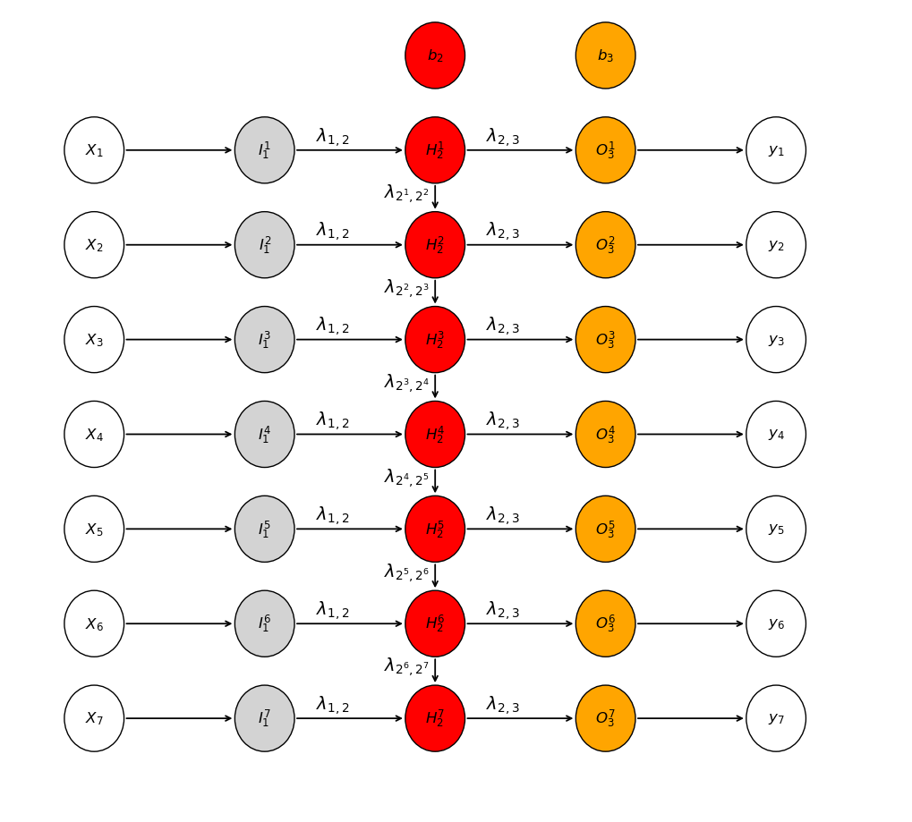
Make a Simple DataSet#
Assume a small dataset,
assume a linear relationship plus a random residual, calculated in advance
apply min-max normalization to force the minimum and maximum values of 0 and 1 respectively
depth = np.arange(1,7+1,1)
ox = np.array([13.0,11.0,9.0,9.0,10.0,8.0,7.0])
x = (ox - min(ox))/(max(ox)-min(ox))
oy = np.array([122, 110, 67, 55, 72, 40, 45])
y = (oy - min(oy))/(max(oy)-min(oy))
plt.subplot(121)
plt.scatter(ox,oy,color='darkorange',edgecolor='black',s=40); add_grid()
plt.xlabel('x - Porosity (fraction)'); plt.ylabel('y - Permeability (mD)'); plt.title('Training Data')
plt.xlim([5.0,15.0]); plt.ylim([0,150.0])
plt.subplot(122)
plt.scatter(x,y,color='darkorange',edgecolor='black',s=40); add_grid()
plt.xlabel('x - N{Porosity}'); plt.ylabel('y - N{Permeability}'); plt.title('Training Data')
plt.xlim([0,1.0]); plt.ylim([0,1.0])
plt.subplots_adjust(left=0.0, bottom=0.0, right=2.0, top=1.0, wspace=0.2, hspace=0.2); plt.show()
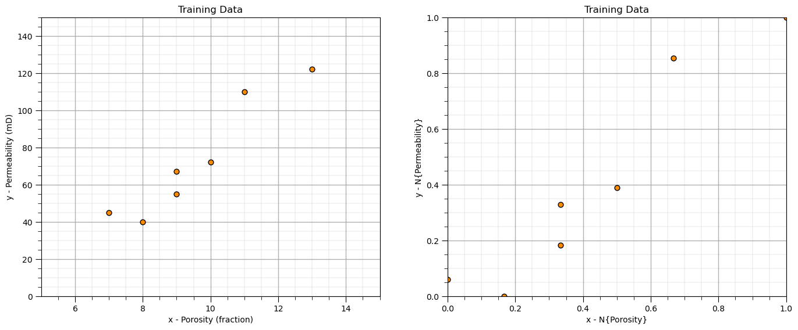
But remember, it is important for our data to be series data. Let’s plot the data as series so we can see the relationships between adjacent ordered samples.
in this case our series data is 1D spatial, ordered over depth, e.g., a core sample extracted from a well
plt.subplot(121)
plt.plot(x,depth,c='darkorange'); plt.ylim([7,1]); plt.xlim([0,1])
plt.xlabel('x - N{Porosity}'); plt.ylabel('Depth (m)'); plt.title('Training Data'); add_grid()
plt.subplot(122)
plt.plot(y,depth,c='darkorange'); plt.ylim([7,1]); plt.xlim([0,1])
plt.xlabel('y - N{Permeability}'); plt.ylabel('Depth (m)'); plt.title('Training Data'); add_grid()
plt.subplots_adjust(left=0.0, bottom=0.0, right=2.0, top=1.0, wspace=0.2, hspace=0.2); plt.show()
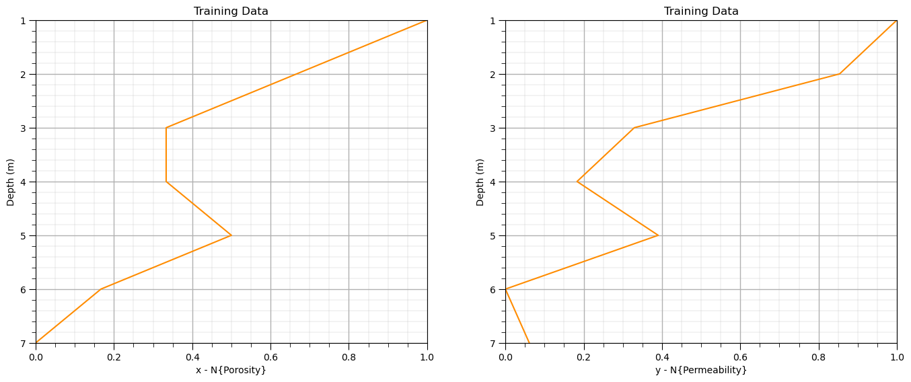
Train the Model#
Now that we have our RNN functions and the training data, let’s train our model weights.
params = initialize_rnn_weights(seed=42)
nepoch = 200000
lr = 0.0005
epoch_history = []; loss_history = []
w12 = []; w2t2 = []; w23 = []; b2 = []; b3 = []
pred_history = np.zeros([nepoch,7])
iepoch = 0
for epoch in range(nepoch):
# Forward
y_pred, h2, a2 = forward_pass(x, params)
# Loss
loss = mse_loss(y_pred, y)
epoch_history.append(epoch); loss_history.append(loss)
# Backward
grads = backward_pass(x, y, y_pred, h2, a2, params)
# Update
params = update_weights(params, grads, lr)
# Store parameters
w12.append(params['w12'].item()); w2t2.append(params['w2t2'].item()); w23.append(params['w23'].item())
b2.append(params['b2'].item()); b3.append(params['b3'].item())
pred_history[iepoch] = y_pred
# if (epoch+1) % 10 == 0 or epoch == 0:
# print(f"Epoch {epoch+1:02d} - Loss: {loss:.3f}")
iepoch = iepoch + 1
plt.subplot(121)
plt.plot(epoch_history,loss_history,color='darkorange',lw=3)
plt.xlim([0,nepoch]); add_grid(); plt.xlabel('Epochs'); plt.ylabel('Mean Square Error'); plt.title('RNN Training Performance')
# Final predictions
y_pred, h2, a2 = forward_pass(x, params)
# print("\nFinal Predictions:", np.round(y_pred, 2))
plt.subplot(122)
plt.plot(y,depth,c='darkorange',zorder=1,label=r'$y(\bf{u}_i)$'); plt.ylim([8,0]); plt.xlim([-0.2,1.2])
plt.scatter(y_pred,depth,c='darkorange',s=40,edgecolor='black',zorder=10,label=r'$\hat{y}(\bf{u}_i)$')
plt.xlabel('y - N{Permeability}'); plt.ylabel('Depth (m)'); plt.title('Training Data'); add_grid(); plt.legend(loc = 'upper left')
plt.subplots_adjust(left=0.0, bottom=0.0, right=2.0, top=1.0, wspace=0.2, hspace=0.2); plt.show()
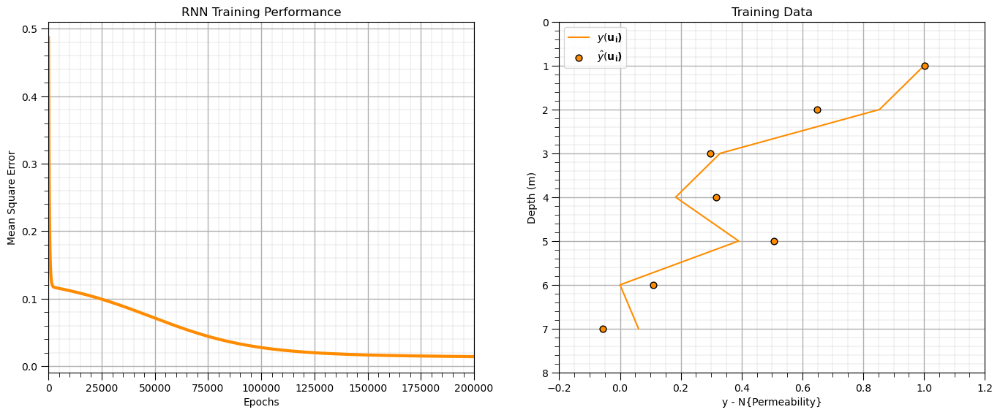
Check the RNN Convergence#
Now we plot the weights, biases and prediction over the epochs to check the training convergence.
select a data point and visualize the evolution of the esitmate over time vs. the true value
visualize the network weights and biases over time
idata = 2
plt.subplot(131)
plt.plot(np.arange(1,nepoch+1,1),pred_history[:,idata],color='red',label=r'$\hat{y}$'); plt.xlim([1,nepoch]); plt.ylim([-0.5,1.5])
plt.xlabel('Epochs'); plt.ylabel(r'$\hat{y}$'); plt.title('Simple Artificial Neural Network Prediction')
plt.plot([1,nepoch],[y[idata],y[idata]],color='red',ls='--');
add_grid(); plt.legend(loc='upper right'); plt.xscale('log')
plt.subplot(132)
plt.plot(np.arange(1,nepoch+1,1),w12,color='lightcoral',label = r'$\lambda_{1,2}$')
plt.plot(np.arange(1,nepoch+1,1),w2t2,color='red',label = r'$\lambda_{2,2^{t-1}}$')
plt.plot(np.arange(1,nepoch+1,1),w23,color='darkred',label = r'$\lambda_{2,3}$')
plt.plot(np.arange(1,nepoch+1,1),b2,color='dodgerblue',label = r'$b_2$')
plt.plot(np.arange(1,nepoch+1,1),b3,color='blue',label = r'$b_3$')
plt.plot([1,nepoch],[0,0],color='black',ls='--')
plt.xlim([1,nepoch]); plt.ylim([-1.5,3.0]);
plt.xlabel('Epochs'); plt.ylabel(r'$\hat{y}$'); plt.title('Simple Artificial Neural Network Weights')
add_grid(); plt.legend(loc='upper left'); plt.xscale('log')
plt.subplots_adjust(left=0.0, bottom=0.0, right=3.0, top=1.0, wspace=0.2, hspace=0.2); plt.show()
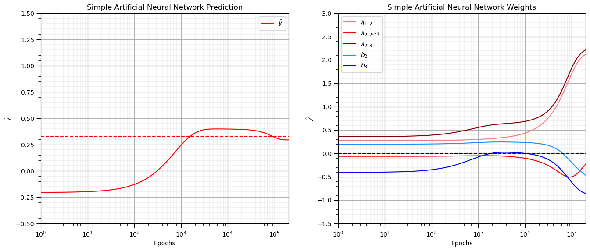
About the Author#

Michael Pyrcz is a professor in the Cockrell School of Engineering, and the Jackson School of Geosciences, at The University of Texas at Austin, where he researches and teaches subsurface, spatial data analytics, geostatistics, and machine learning. Michael is also,
the principal investigator of the Energy Analytics freshmen research initiative and a core faculty in the Machine Learn Laboratory in the College of Natural Sciences, The University of Texas at Austin
an associate editor for Computers and Geosciences, and a board member for Mathematical Geosciences, the International Association for Mathematical Geosciences.
Michael has written over 70 peer-reviewed publications, a Python package for spatial data analytics, co-authored a textbook on spatial data analytics, Geostatistical Reservoir Modeling and author of two recently released e-books, Applied Geostatistics in Python: a Hands-on Guide with GeostatsPy and Applied Machine Learning in Python: a Hands-on Guide with Code.
All of Michael’s university lectures are available on his YouTube Channel with links to 100s of Python interactive dashboards and well-documented workflows in over 40 repositories on his GitHub account, to support any interested students and working professionals with evergreen content. To find out more about Michael’s work and shared educational resources visit his Website.
Want to Work Together?#
I hope this content is helpful to those that want to learn more about subsurface modeling, data analytics and machine learning. Students and working professionals are welcome to participate.
Want to invite me to visit your company for training, mentoring, project review, workflow design and / or consulting? I’d be happy to drop by and work with you!
Interested in partnering, supporting my graduate student research or my Subsurface Data Analytics and Machine Learning consortium (co-PI is Professor John Foster)? My research combines data analytics, stochastic modeling and machine learning theory with practice to develop novel methods and workflows to add value. We are solving challenging subsurface problems!
I can be reached at mpyrcz@austin.utexas.edu.
I’m always happy to discuss,
Michael
Michael Pyrcz, Ph.D., P.Eng. Professor, Cockrell School of Engineering and The Jackson School of Geosciences, The University of Texas at Austin
More Resources Available at: Twitter | GitHub | Website | GoogleScholar | Geostatistics Book | YouTube | Applied Geostats in Python e-book | Applied Machine Learning in Python e-book | LinkedIn
Comments#
This was a basic treatment of recurrent neural networks. Much more could be done and discussed, I have many more resources. Check out my shared resource inventory and the YouTube lecture links at the start of this chapter with resource links in the videos’ descriptions.
I hope this is helpful,
Michael